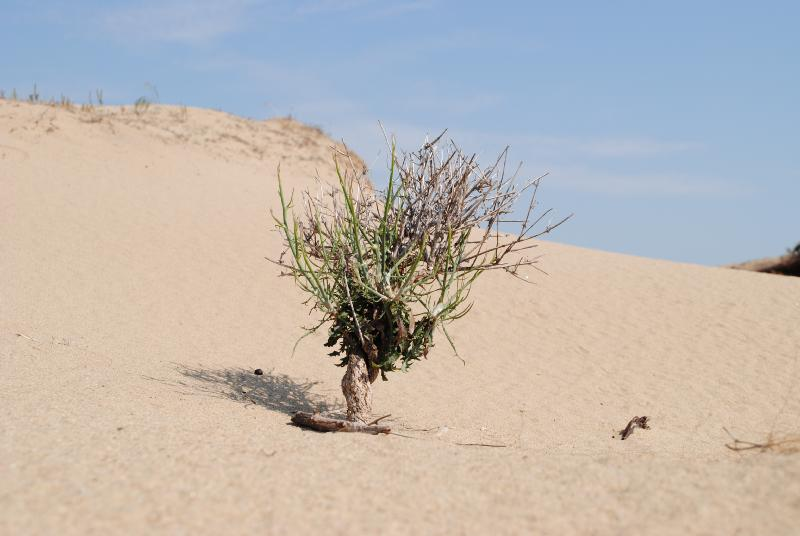
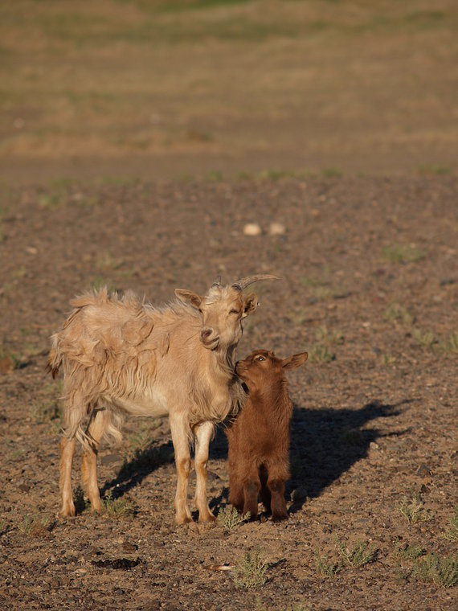

GEOGRAFILIA: Cauzele formării deșerturilor
 ACASĂ DESPRE GEO BAC OMNIQUIZ ȘCOALĂ GEO FIZICĂ GEO UMANĂ GIS/HĂRȚI DRUMEȚII JOCURI DOC FOTO STATELE LUMII LISTE DE 10 CUM SĂ... DIVERSE SONDAJE FEED-BACK CONTACT CAUTĂ... DONAȚII
Cauzele formării deșerturilor
În termeni simplificați, deșerturile sunt regiuni uscate ale planetei, unde cad cantități reduse de precipitații (sub 100 mm/an). Deșerturile sunt caracterizate de întinse forme de relief erozivo-acumulativ, cu procese geomorfologice foarte intense, între care enumerăm: dezagregarea, coraziunea, deflația, eroziunea torențială, prăbușiri de roci etc. Din cauza învelișului vegetal slab reprezentat și a densității foarte scăzute a populației, acestea mai sunt denumite și ”pustiuri”.În funcție de condițiile locale (climat, substrat geologic, altitudinile și formele de relief etc.), deșerturile tipice sunt de mai multe feluri:
- deșerturi de nisip, sau erg-uri, cu bine-cunoscutele lor dune de nisip.
- deșerturi de pietre, sau reg-uri.
- deșerturi stâncoase, sau hamade, cu munți erodați și martori de eroziune.
Fig.1. Marele Deșert Victoria din Australia.
Culoarea roșiatică se datorează oxizilor de fier
Unii geografi mai încadrează în familia deșerturilor și:
- semideșerturile, situate de obicei la periferia deșerturilor. Aici cad cantități de precipitații mai ridicate (100-200 mm/an), semideșerturile făcând tranziția spre zonele vecine (stepe, savane). Semideșertul este primul afectat de extinderea deșertului, prin procesul de deșertificare, așa cum se întâmplă în regiunea Sahel, la S de Sahara.
- deșerturile reci, corespunzătoare marilor întinderi de gheață (Antarctica, Arctica și Groenlanda), unde cantitatea de precipitații este aproape nulă.
- deșerturile montane, cum ar fi platoul Tibet, de asemenea destul de uscate.
În prezentarea de față explicăm formarea deșerturilor tipice. Fie că este vorba de erg-uri, reg-uri sau hamade, formarea lor este rezultatul unui factor esențial: ariditatea climei (sau uscăciunea climei). Adică, în zonele de pe Glob unde cantitatea de precipitații este destul de coborâtă, acolo au apărut și deșerturile.
Există 5 categorii de cauze care favorizează uscăciunea climei:
1) Maxima atmosferică tropicală . În zona tropicelor se instalează maxime barice, adică au loc mișcări descendente ale aerului (pentru a completa mișcările ascendente de la ecuator). Acest lucru restricționează convecția, condensarea și precipitarea, rezultând un climat uscat, ce a dus la formarea deșerturilor din Australia, pen. Arabică sau Sahara.
2) Circulația continentală a aerului . Există situații când deșerturile apar foarte aproape de țărm, însă nu primesc precipitații dinspre ocean deoarece circulația generală a atmosferei se face dinspre continent. Masele de aer vor fi deci uscate. Așa se întâmplă de exemplu în deșertul Thar, în pen. Arabică etc.
3) Curenții oceanici reci . Și mai spectaculoase sunt deșerturile care se sfârșesc brusc chiar pe țărmul oceanului (Namib, Atacama, Deșertul Peru etc.). În cazul acestora, în zona respectivă sunt curenți oceanici reci (Curentul Benguelei, Peru, Malvinelor, Australiei de Vest etc.), din care nu se evaporă apa, masele de aer de deasupra fiind deci uscate.
Fig.2. Deșertul Namib își scaldă dunele în Atlantic. Curentul rece al Benguelei este răspunzător pentru acest fapt spectaculos.
4) Depărtarea de ocean . Cu cât o regiune se află situată mai în interiorul continentului, cu atât va recepționa mai puțină cantitate de umezeală dinspre ocean. Din cauza depărtării față de ocean au apărut deșerturile în Asia Centrală.
5) Izolarea în interiorul barajelor orografice . Ariile depresionare, înconjurate de munți destul de înalți (peste 3000 m) își formează un climat uscat, deoarece munții barează masele de aer umede ce ar putea veni din exterior. Așa au apărut deșerturile nord-americane.
Fig.3. Deșertul Sonora. Cactușii sunt un element
des întâlnit în deșerturile nord-americane
Bineînțeles, fiecare deșert a apărut prin combinația acestor categorii de factori. Pentru a arăta cât de mult influențează cei 5 factori fiecare deșert, am realizat harta de mai jos.
Fig.4. Harta deșerturilor pe Glob
În concluzie, deșerturile se formează ca urmare a climatului uscat, acesta apărând atât în zona caldă cât și în cea temperată. El poate fi rezultatul caracteristicilor regionale ale atmosferei, ale raportului ocean-continent, ale reliefului sau ale curenților oceanici.
de Ionuț T. 26.02.2015 Related Posts with thumbnails for blogger blogger widgets Related Posts with thumbnails for blogger blogger widgets Cuvinte cheie: baraje orografice , cauza climei uscate , cauzele formarii deserturilor , deserturile harta , deserturile nisip pietre reci , maxima atmosferica tropicala , tipuri deserturi , tudoseionut
8 comentarii:
shakuka 04.03.2015, 19:46foarte frumoasa descrierea si harta de asemenea!
Răspundeți Ștergere Răspunsuri AdminGeografilia 04.03.2015, 19:48Mă bucur că îți plac.
Ștergere Răspunsuri Răspundeți Răspundeți Unknown 14.08.2016, 13:08Lucruri interesante si accesibile pt toti cititorii. Felicitari pt. Site!
Răspundeți Ștergere Răspunsuri Răspundeți Unknown 14.08.2016, 13:09Lucruri interesante si accesibile pt toti cititorii. Felicitari pt. Site!
Răspundeți Ștergere Răspunsuri AdminGeografilia 14.08.2016, 13:57Mulțumesc, Ciprian!
Ștergere Răspunsuri Răspundeți Răspundeți Andreas 28.09.2016, 21:20Forte frumos explicat....Felicitari!
Răspundeți Ștergere Răspunsuri Răspundeți Unknown 14.04.2020, 18:47 felicitari ptr prezentare !
Mulțumesc!
Ștergere Răspunsuri Răspundeți Răspundeți Adăugați un comentariu Încărcați mai multe...
Postare mai nouă Postare mai veche Pagina de pornire Abonați-vă la: Postare comentarii (Atom)
Like pentru abonare
GeografiliaArhivă
► 2020 (29) ► Sep (3) ► Aug (9) ► Iun (2) ► Mai (4) ► Apr (8) ► Mar (1) ► Ian (2) ► 2019 (20) ► Nov (1) ► Oct (1) ► Aug (7) ► Iul (5) ► Iun (1) ► Mai (1) ► Mar (1) ► Ian (3) ► 2018 (47) ► Dec (6) ► Oct (6) ► Sep (6) ► Aug (5) ► Iul (2) ► Iun (4) ► Mai (1) ► Apr (2) ► Mar (2) ► Feb (3) ► Ian (10) ► 2017 (26) ► Dec (6) ► Nov (3) ► Oct (5) ► Iul (2) ► Iun (3) ► Mai (1) ► Apr (1) ► Feb (2) ► Ian (3) ► 2016 (102) ► Dec (4) ► Nov (3) ► Oct (2) ► Sep (10) ► Aug (9) ► Iul (11) ► Iun (8) ► Mai (8) ► Apr (8) ► Mar (9) ► Feb (18) ► Ian (12) ▼ 2015 (212) ► Dec (28) ► Nov (24) ► Oct (29) ► Sep (20) ► Aug (16) ► Iul (12) ► Mai (2) ► Apr (17) ► Mar (16) ▼ Feb (27) Mapping worlds, o aplicație on-line de vizualizare... Ghicește de unde sunt aceste imagini satelitare Cauzele formării deșerturilor Pregătire Geografie BAC: Ce se cere la examen Mega-orașele de pe Glob Activitate la școală: Harta zonei din vecinătatea ... Marele Zid Chinezesc Delta Dunării, paradisul aproape pierdut Santorin și Vezuviu - două erupții vulcanice spect... Universul la scară Orientarea sportivă, între Geografie și Sport 10 gropi uriașe apărute pe Glob în ultimii ani Geografie BAC, modele de subiecte și variante extr... Fenomenul Gravity hill în România (”Mașina care ur... Fac hărți Defrișările din pădurea Amazoniană Aplicații cu hărți pentru școală Zonele biogeografice - zona rece Zonele biogeografice - zona temperată Zonele biogeografice: zona caldă Nu tremur la cutremur, campanie de informare preve... Gustave, crocodilul mâncător de oameni Muntele Kilimanjaro, cel mai înalt din Africa 11 limbi oficiale în Africa de Sud Maurovlahica - documentar Recomandare Geografilia: Arnold Platon Praf saharian peste Marea Mediterană - 1.02.2015 ► Ian (21) ► 2014 (19) ► Dec (3) ► Oct (1) ► Sep (2) ► Iun (1) ► Mai (1) ► Apr (4) ► Mar (2) ► Feb (4) ► Ian (1) ► 2013 (76) ► Dec (2) ► Nov (1) ► Oct (3) ► Sep (6) ► Aug (23) ► Iul (11) ► Iun (3) ► Mai (1) ► Apr (2) ► Mar (3) ► Feb (9) ► Ian (12) ► 2012 (27) ► Dec (2) ► Nov (1) ► Oct (3) ► Sep (2) ► Iun (5) ► Mai (2) ► Apr (2) ► Ian (10) ► 2011 (25) ► Sep (3) ► Aug (4) ► Iun (10) ► Mai (4) ► Mar (1) ► Feb (1) ► Ian (2) ► 2010 (59) ► Dec (13) ► Nov (15) ► Oct (13) ► Sep (18)Blog-uri geo în română
Green Report Peregrinprinlume Turism Istoric Lecții de geografie Meteo Moldova Oceanclass Mapsclass Toponime Alexandra Tătaru Travel Europe Ioan Stoenică Conceptm8 Colecționarul de Orașe Geoevents Rotea Geografie Arnold Platon Geo knowledge History Maps GeoInformStory Case și călătorii Valiza cu Călătorii Greenly Geografie Gândire Geografică Enciclopedie deschisă Geografia online Daniela Enjoy Maps blog Daco Geografica Blogu’ lu’ Suditu Mentalgeo Teodora Ursulică Segregare urbană Sistem Informatic Geografic National Geographic ro Geo Tutorials IstoGraf Retro-Râmnic Bac geografie Întoarcerea la valori Orizont Arhiva de geografie Profu' de geogra Geogra Geo-spatial Geografie forum Seterra Afișați 5 Afișați tot
Link-uri externe
RealClimate Alternative Transport Political Geography Now Electoral Geography David Rumsey Historical Brilliant Maps BIG Map Geografia Visual Google Earth Blog Geogr@phy Blog Geology Page GeoCurrents USGS Springtime of Nations Google Sightseeing Globaïa Map Projections NASA Earth Observatory NASA GIS Lounge Images of Change Library Map Collection National Geographic Euratlas Animated Earth Compare Map Projections CartoDB About Geography Real time data Earth Geographicus Antique Maps Shaded Relief Digital Geography Afișați 10 Afișați totComentarii recente
Susține Geografilia!
Articole interesante
Random Posts WidgetArticole populare
Geografie - bacalaureat 10 specii de foioase din România Peste 100 de jocuri ale copilăriei noastre Cum să identifici punctele cardinale în teren Cum să identifici Steaua Polară și Carul Mic Zonele biogeografice: zona caldă Hartă bac: Unitățile majore de relief din Europa Orașul Urlați - fotografii vechi Pregătire Geografie Bac: Formule care pot pica la subiectul al III-lea Hărți relief România